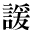
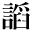
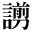
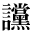
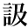
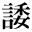
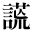

|
|
1_92_4.gif |
●夏目漱石『思い出す事など』 |
|
|
1_92_6.gif |
●桑原隲蔵『晋室の南渡と南方の開発』 |
|  | 2_88_66.gif |
●内藤湖南『爾雅の新研究』 |
|  | 2_88_72.gif |
●三遊亭圓朝、鈴木行三校訂『菊模様皿山奇談』 ●三遊亭圓朝、鈴木行三校訂『名人長二』 |
|  | 2_88_73.gif |
●芥川龍之介『「鏡花全集」目録開口』 |
|
|
2_88_74.gif |
●芥川龍之介『或阿呆の一生』 ●芥川龍之介『闇中問答』 ●芥川龍之介『一塊の土』 ●芥川龍之介『海のほとり』 ●芥川龍之介『河童』 ●芥川龍之介『玄鶴山房』 ●芥川龍之介『西方の人』 ●芥川龍之介『死後』 ●芥川龍之介『侏儒の言葉』 ●芥川龍之介『少年』 ●芥川龍之介『虎の話・機関車を見ながら・春の夜は・僕は・東洋の秋』 ●芥川龍之介『歯車』 ●芥川龍之介『文放古』 ●芥川龍之介『長崎小品』 ●芥川龍之介『桃太郎』 ●有島武郎『一房の葡萄』 ●尾崎紅葉『金色夜叉』 ●島崎藤村『藁草履』 ●レオ・トルストイ作、森鴎外（森林太郎）訳『パアテル・セルギウス』 ●近松秋江『狂乱』 ●近松秋江『黒髪』 ●近松秋江『霜凍る宵』 ●直木三十五『鍵屋の辻』 ●直木三十五『傾城買虎之巻』 ●夏目漱石『吾輩は猫である』（新字・新仮名） ●夏目漱石『吾輩ハ猫デアル』（旧字・旧仮名） ●南部修太郎『畫家とセリセリス』 ●南部修太郎『自分のこと』 ●アナトール・フランス、芥川龍之介訳『バルタザアル』 ●森鴎外『大塩平八郎』 ●森鴎外『寒山拾得』（新字・新仮名） ●森鴎外『寒山拾得』（旧字・旧仮名） ●森鴎外『最後の一句』 ●森鴎外『山椒大夫』 ●森鴎外『高瀬舟』 ●森鴎外『二人の友』 ●森鴎外『安井夫人』 ●森鴎外『ヰタ・セクスアリス』 ●アンリ・ド・レニエエ作、森鴎外（森林太郎）訳『復讐』 |
|
|
2_88_81.gif |
●南方熊楠『十二支考（１）虎に関する史話と伝説民俗』 |
|  | 2_88_84.gif |
●穂積陳重『法窓夜話』 ●森鴎外『津下四郎左衛門』 |
|  | 0212_6150.gif |
●三遊亭圓朝、鈴木行三校訂『名人長二』 |
|  | 0212_6208.gif |
●桑原隲蔵『支那人の妥協性と猜疑心』 |
|  | gaiji001.gif |
●尾崎紅葉『金色夜叉』 |